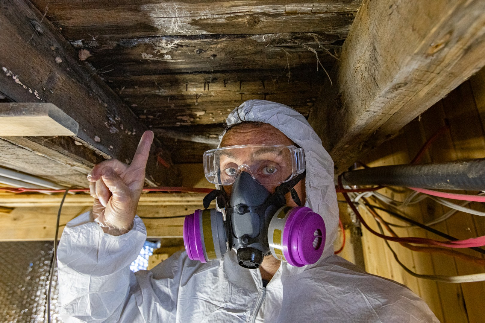

Will mold remediation force you to leave your home for days—or can you safely stay during the process? That’s one of the biggest concerns homeowners have after discovering mold. The answer depends on how severe the contamination is, where the mold is located, and how professional the remediation process is. In many cases, homeowners can remain in portions of the property during mold remediation, but larger or more hazardous situations may require temporary relocation for safety and comfort.
Understanding what happens during mold removal helps homeowners prepare for the process and make the best decision for their family. Professional mold remediation services are designed to contain contamination, improve indoor air quality, and restore the property safely while minimizing disruption whenever possible.
Whether you can stay inside your home during mold removal and restoration depends on several important factors. Small, isolated mold problems may allow occupants to remain in unaffected areas of the property while remediation crews work in contained spaces.
However, larger mold infestations affecting multiple rooms, HVAC systems, or high-traffic areas may make temporary relocation the safer option. The goal of professional remediation is to limit exposure to airborne mold spores and maintain safe indoor conditions throughout the project.
A professional inspection helps determine the severity of contamination and whether remaining in the home is appropriate.
One of the biggest concerns during remediation is exposure to airborne mold spores. Mold spores become more active when contaminated materials are disturbed during cleanup.
Individuals with asthma, allergies, respiratory conditions, or weakened immune systems are often more sensitive to mold exposure. Young children and older adults may also experience stronger reactions during the remediation process.
Common symptoms associated with mold exposure include:
Professional mold remediation companies use containment barriers, HEPA filtration, and air scrubbers to reduce these risks and protect indoor air quality.
One of the reasons homeowners may be able to stay during remediation is because professional containment systems isolate affected areas from the rest of the house.
Containment typically includes:
These systems prevent mold spores from spreading into unaffected areas while cleanup is underway.
Proper containment is one of the biggest differences between professional remediation and DIY cleanup attempts, which often spread contamination throughout the property.
There are situations where leaving the home temporarily is the safest and most practical option.
You may need temporary relocation if:
In severe cases involving large-scale water damage restoration and mold remediation, temporary relocation may help speed up the restoration process while protecting occupants from unnecessary exposure.
Professional restoration teams will explain what to expect before work begins so homeowners can plan accordingly.
The timeline for professional mold removal depends on the extent of contamination and the amount of reconstruction required after cleanup.
Small remediation projects may take only a few days, while larger jobs involving structural drying, demolition, and repairs may take longer.
Factors affecting the timeline include:
Fast response helps reduce both the length and cost of remediation because mold spreads quickly when moisture remains present.
Many homeowners don’t realize that mold problems are often connected to unresolved water damage. Burst pipes, roof leaks, flooding, and plumbing failures create ideal conditions for mold growth.
That’s why professional water damage restoration services are often included alongside mold remediation. Drying the structure completely is essential for preventing mold from returning after cleanup.
Without addressing the source of moisture, mold can reappear even after remediation is complete.
Professional remediation begins with a detailed inspection to identify affected areas and locate the source of moisture. Once containment is established, technicians safely remove contaminated materials and clean surrounding surfaces using specialized antimicrobial treatments.
HEPA filtration systems clean the air continuously during the process to reduce airborne spores. Moisture levels are monitored closely to ensure the environment is safe and dry before reconstruction begins.
If materials like drywall, insulation, or flooring are heavily contaminated, they may need to be removed and replaced as part of the restoration process.
Attempting to stay in a home during DIY mold cleanup often creates greater risks because spores can spread throughout the property without proper containment.
Professional mold remediation services protect both the structure and the people inside it by using proven safety protocols, advanced equipment, and complete moisture control strategies.
Hiring experienced professionals also helps reduce long-term repair costs and lowers the risk of recurring mold problems.
When you need trusted mold remediation services, S.W.A.T. Restoration is ready to help. Our team provides expert mold removal, containment, water damage restoration, and full repair services designed to restore your home safely and efficiently. We work quickly to minimize disruption while protecting your indoor air quality and your property.
If you’ve discovered mold in your home and aren’t sure whether it’s safe to stay during remediation, contact S.W.A.T. Restoration today for a professional inspection and dependable guidance you can trust.